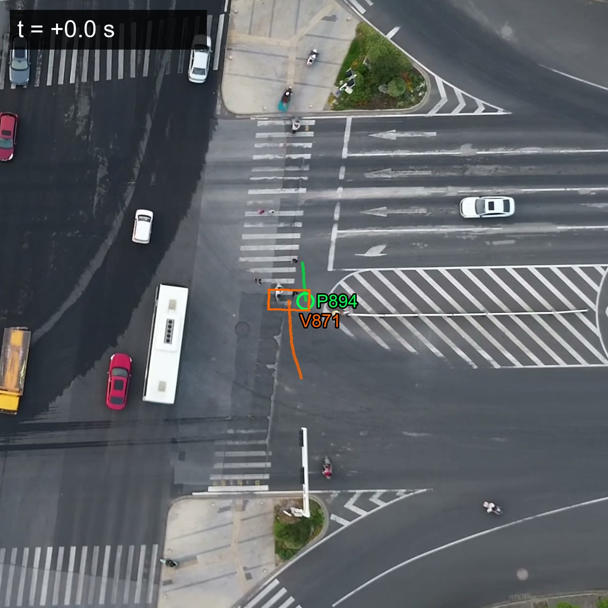

Continuous intersection safety audits for city traffic engineers. NearMiss turns any traffic camera into a near-miss detector, visually reviewed by Meta Muse Spark, routed to a human analyst.

By the time a fatality forces a city to study an intersection, the pattern has been there — unseen, unmeasured — for years.
Reactive. Expensive. Slow.
Proactive. Continuous. Measurable.
Deterministic physics. Visual AI review. Human-in-the-loop. Not vibes — measurements.
SAM 3.1 segments and tracks every pedestrian and vehicle across the footage.
Grid-based Post-Encroachment Time measured on a 0.5m world grid with vehicle-footprint inflation.
Muse Spark verifies each candidate event by looking at real frames. Honest uncertainty.
Ambiguous cases routed to an analyst dashboard. Confirm, dismiss, or escalate — with notes.
We validated NearMiss on FLUID, a public drone-captured intersection dataset with its own labeled conflict ground truth.
FLUID publishes 147 labelled vehicle-vehicle conflicts with their own PET measurements. Our engine matched them on 95% of events and detected every physical-contact case.
In the critical pedestrian-vehicle event shown above, Muse Spark positively identified the vehicle as a scooter — matching FLUID's dimensions exactly — and honestly flagged the pedestrian as being at marginal pixel resolution. The event was routed to the review queue, not auto-accepted.
We never ask an LLM to invent facts. Meta's models observe; our deterministic physics measures; a human confirms.
Streaming segmentation and tracking of every pedestrian and vehicle across the clip, with a 16-objects-per-frame guarantee and saturation monitoring.
Vision-grounded structured review of each candidate event. Neutral questions, strict JSON schema, honest uncertainty — never shown PET or severity.
Grid-based PET with vehicle footprint inflation. Validated against FLUID's own labelled conflicts — 95% match, 100% contact recall.
If your job is making the case for a signal timing change, a protected crosswalk, or a new camera — NearMiss gives you the evidence.
Replace reactive crash statistics with proactive, continuous near-miss evidence that justifies infrastructure spending to the budget committee.
Add a defensible safety analytics layer to existing camera infrastructure, with API hooks for your platform.
Universities, schools, corporate campuses — monitor drop-off zones, parking lot crosswalks, service road crossings.
The pilot is running against FLUID right now. Open the dashboard, click into any critical event, and watch the pedestrian-vehicle encounter unfold frame by frame.